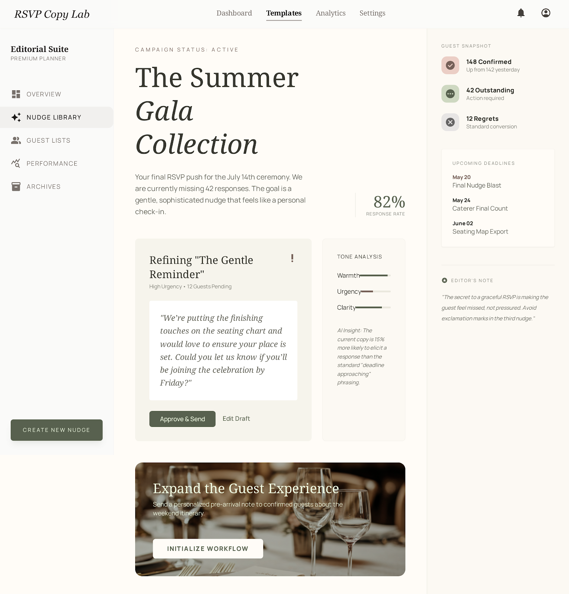

PF SAFE DEMO · 2026-03-18-p002
Wedding RSVP Nudge Copy Lab
Craft warmer, clearer RSVP follow-up messages based on guest segment and likely response friction.
ingest status
Imported from Stitch exportThe approved Stitch visual now ships through a local PF-safe wrapper for stable preview and hosting.
- Source preserved as local artifact
- Public demo path avoids remote CDN dependency
- Preview uses the shipped Stitch screen
